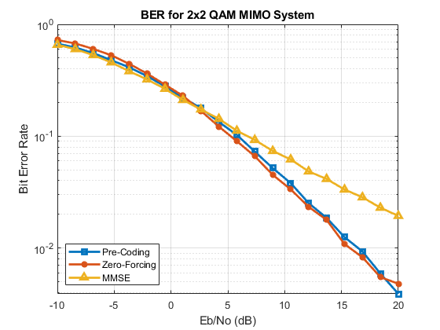

MIMO-OFDM Project
Alon S. Levin ECE-408: Wireless Communications Spring 2020 Part 1: MIMO
Contents
Prepare Environment
clear, clc, close all % Clear all current variables and outputs format compact % Prepare command line output
Simulation Parameters
% System parameters M = 4; % Modulation order: QAM numSyms = 48e2; % Number of transmitted symbols numTx = 2; % Number of transmitters numRx = 2; % Number of receivers % Channel parameters numChan = 3; % Number of channels numSNR = 20; % Number of SNR values to check EbNo_vect = linspace(-10, numSNR, 20); % Eb/No vector SNR_vect = EbNo_vect + 10*log10(log2(M)); % SNR vector
Initialize BER Vectors
BER_PC --> Pre-coding BER_ZF --> Zero-forcing BER_MMSE --> Minimum Mean Squared Error
BER_PC = nan(numChan, numSNR); BER_ZF = nan(numChan, numSNR); BER_MMSE = nan(numChan, numSNR);
Pre-Coding
for channel_ticker = 1:numChan % Generate a transmit signal tx_syms = randi([0, M-1], numTx, 1, numSyms); tx_mod = qammod(tx_syms, M); % Build a channel H = sqrt(1/2)*(randn(numRx, numTx, numSyms) + 1j*randn(numRx, numTx, numSyms)); % Perform SVD, pre-code, and apply the channel U = zeros(numRx, numTx, numSyms); tx_precode = zeros(numRx, 1, numSyms); tx_channel = zeros(numRx, 1, numSyms); for sym_ticker = 1:numSyms currH = H(:,:,sym_ticker); % SVD [U(:,:,sym_ticker), ~, currV] = svd(currH); % Pre-code tx_precode(:,:,sym_ticker) = currV * tx_mod(:,:,sym_ticker); % Apply the channel tx_channel(:,:,sym_ticker) = currH * tx_precode(:,:,sym_ticker); end % Add AWGN per SNR values, post-code, find BER for SNR_ticker = 1:numSNR currSNR = SNR_vect(SNR_ticker); % Generate AWGN awgn = 10^(-currSNR/20) * sqrt(1/2) * ... (randn(numRx, 1, numSyms) + 1j*randn(numRx, 1, numSyms)); % Add AWGN to the channel tx_awgnchannel = tx_channel + awgn; % Post-code rx_postcode = zeros(numRx, 1, numSyms); for sym_ticker = 1:numSyms rx_postcode(:,:,sym_ticker) = U(:,:,sym_ticker)' * tx_awgnchannel(:,:,sym_ticker); end % Demodulate, compute BER rx_demod = qamdemod(rx_postcode, M); BER_PC(channel_ticker, SNR_ticker) = mean(any(rx_demod ~= tx_syms)); end end
Zero-Forcing
for channel_ticker = 1:numChan % Generate a transmit signal tx_syms = randi([0, M-1], numTx, 1, numSyms); tx_mod = qammod(tx_syms, M); % Build a channel H = sqrt(1/2)*(randn(numRx, numTx, numSyms) + 1j*randn(numRx, numTx, numSyms)); % Apply the channel tx_channel = zeros(numRx, 1, numSyms); for sym_ticker = 1:numSyms tx_channel(:,:,sym_ticker) = H(:,:,sym_ticker) * tx_mod(:,:,sym_ticker); end % Add AWGN per SNR values, apply zero-forcing equalizer, find BER for SNR_ticker = 1:numSNR currSNR = SNR_vect(SNR_ticker); % Generate AWGN awgn = 10^(-currSNR/20) * sqrt(1/2) * ... (randn(numRx, 1, numSyms) + 1j*randn(numRx, 1, numSyms)); % Add AWGN to the channel tx_awgnchannel = tx_channel + awgn; % Apply zero-forcing equalizer rx_zf = zeros(numRx, 1, numSyms); for sym_ticker = 1:numSyms currH = H(:,:,sym_ticker); W = (currH' * currH) \ currH'; rx_zf(:,:,sym_ticker) = W * tx_awgnchannel(:,:,sym_ticker); end % Demodulate, compute BER rx_demod = qamdemod(rx_zf, M); BER_ZF(channel_ticker, SNR_ticker) = mean(any(rx_demod ~= tx_syms)); end end
MMSE
for channel_ticker = 1:numChan % Generate a transmit signal tx_syms = randi([0, M-1], numTx, 1, numSyms); tx_mod = qammod(tx_syms, M); % Build a channel H = sqrt(1/2)*(randn(numRx, numTx, numSyms) + 1j*randn(numRx, numTx, numSyms)); % Apply the channel tx_channel = zeros(numRx, 1, numSyms); for sym_ticker = 1:numSyms tx_channel(:,:,sym_ticker) = H(:,:,sym_ticker) * tx_mod(:,:,sym_ticker); end % Add AWGN per SNR values, apply MMSE equalizer, find BER for SNR_ticker = 1:numSNR currSNR = SNR_vect(SNR_ticker); % Generate AWGN awgn = 10^(-currSNR/20) * sqrt(1/2) * ... (randn(numRx, 1, numSyms) + 1j*randn(numRx, 1, numSyms)); % Add AWGN to the channel tx_awgnchannel = tx_channel + awgn; % Apply MMSE equalizer rx_mmse = zeros(numRx, 1, numSyms); for sym_ticker = 1:numSyms currH = H(:,:,sym_ticker); W = (currH'*currH + eye(numTx)*10^(-currSNR/20)) \ currH'; rx_mmse(:,:,sym_ticker) = W * tx_awgnchannel(:,:,sym_ticker); end % Demodulate, compute BER rx_demod = qamdemod(rx_mmse, M); BER_MMSE(channel_ticker, SNR_ticker) = mean(any(rx_demod ~= tx_syms)); end end
Plot BERs
figure semilogy(EbNo_vect, mean(BER_PC)', '-s', 'LineWidth', 2) hold on semilogy(EbNo_vect, mean(BER_ZF)', '-*', 'LineWidth', 2) semilogy(EbNo_vect, mean(BER_MMSE)', '-^', 'LineWidth', 2) title('BER for 2x2 QAM MIMO System') grid on xlabel('Eb/No (dB)') ylabel('Bit Error Rate') legend({'Pre-Coding', 'Zero-Forcing', 'MMSE'}, 'Location', 'southwest')